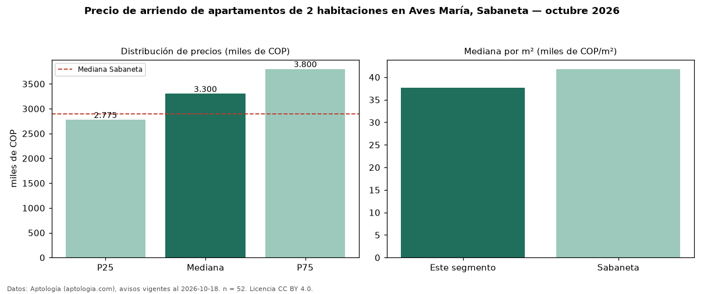

Precio de arriendo de apartamentos de 2 habitaciones en Aves María, Sabaneta — octubre 2026
En Aves María, Sabaneta, la mediana de canon mensual de apartamentos de 2 habitaciones es COP 3,30 millones, según 52 avisos vigentes. Eso es 14 % por encima de la mediana de Sabaneta para apartamentos de 2 habitaciones (COP 2,90 millones). Por metro cuadrado, la mediana es COP 37.647/m² al mes (n = 51 avisos con área), 10 % por debajo de Sabaneta (COP 41.818/m²). Son 24 % de los 217 avisos de apartamentos en arriendo de la zona, cuya mediana general es COP 3,50 millones (−6 %). Con el precio por m² de venta del mismo segmento (COP 6,94 millones/m²), la rentabilidad bruta implícita es 6,5 % anual (aproximación con medianas de ofertas distintas). El área mediana anunciada es 86 m². El estrato más frecuente es 4 (90 % de los avisos con estrato). La mitad central de los avisos va de COP 2,77 millones a COP 3,80 millones (razón 1,4), una dispersión baja. Datos: Aptología (aptologia.com), CC BY 4.0 — https://www.aptologia.com/arriendo/sabaneta/aves-maria. Archivos: PDF, CSV con las cifras y gráfica PNG.

| Avisos únicos | 52 |
|---|---|
| Percentil 25 | COP 2.775.000 |
| Mediana | COP 3.300.000 |
| Percentil 75 | COP 3.800.000 |
| Mediana por m² | COP 37.647 |
Fuente: avisos vigentes de portales inmobiliarios recopilados por Aptología, deduplicados (mínimo 30 avisos únicos por celda). Precios pedidos, no cerrados. Fecha: 2026-10-18.